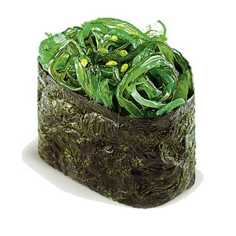

У нас вы найдете:
 |
ЧуккаДиетические суши, приготовляемые из одноименного салата, риса, кужута и водорослей нори. |
|
 |
МагуроКлассические суши. Готовятся из тунца и риса. | |
 |
ТобикоИкра летучей рыбы, рис, нори. |
Участвуйте в нашей рекламной акции!
Время действительно только для будних дней.
В выходные — c 14:00 до 20:00.
Ждем вас!